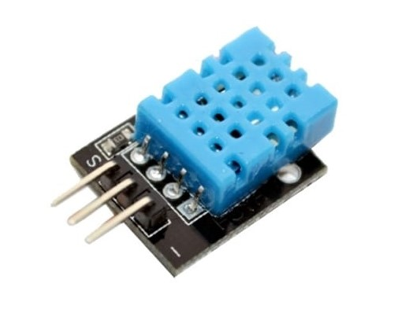
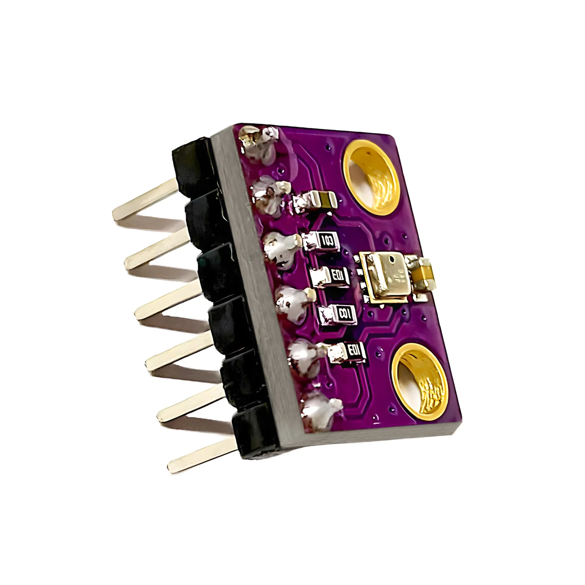
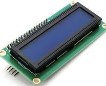
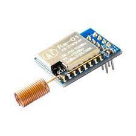
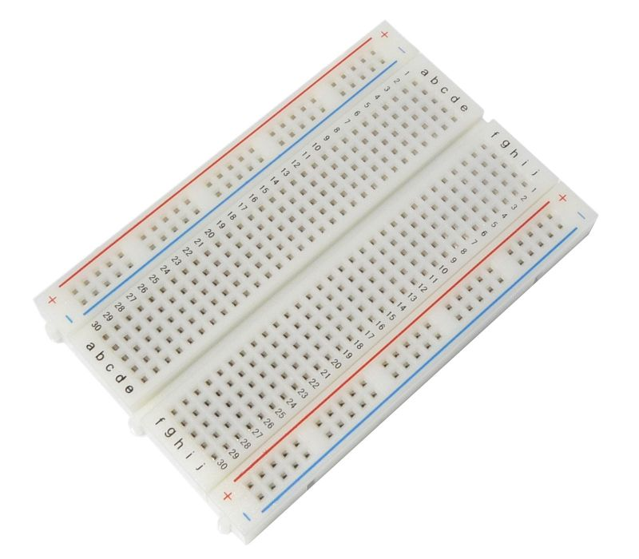

ESP32
È un microcontrollore con Wi-Fi e Bluetooth, ideale per IoT grazie al dual-core, ai pin GPIO e alla facilità di programmazione. |
 |
DHT11
È un sensore digitale che misura sia la temperatura che l'umidità relativa dell'aria. È molto utilizzato in progetti con Arduino e simili per la sua facilità d'uso e il basso costo. |
 |
BME280
È un sensore digitale che misura temperatura, umidità e pressione atmosferica con alta precisione e basso consumo. |
 |
LCD
È un display per Arduino che mostra testo e dati, si collega facilmente e si controlla con la libreria LiquidCrystal.. |
 |
MODULO LORA
È un dispositivo per comunicazioni radio a lunga distanza, basso consumo, usato in reti di sensori e dispositivi connessi. |
 |
BREADBOARD
È una piastra per collegare componenti elettronici senza saldature, ideale per prototipi e sperimentazioni. |
 |